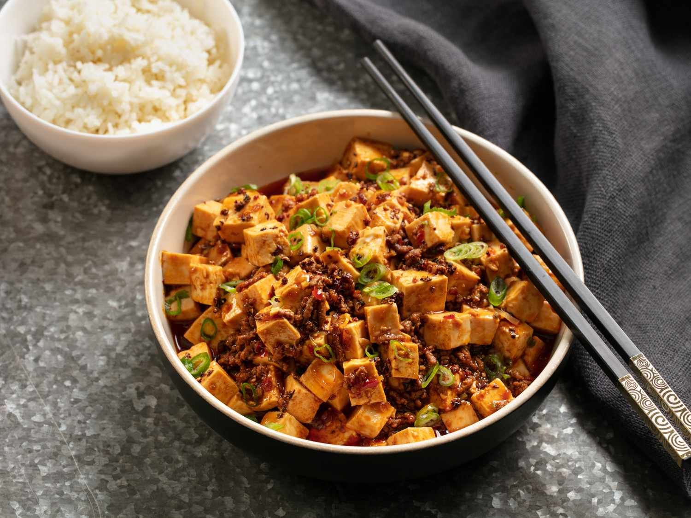
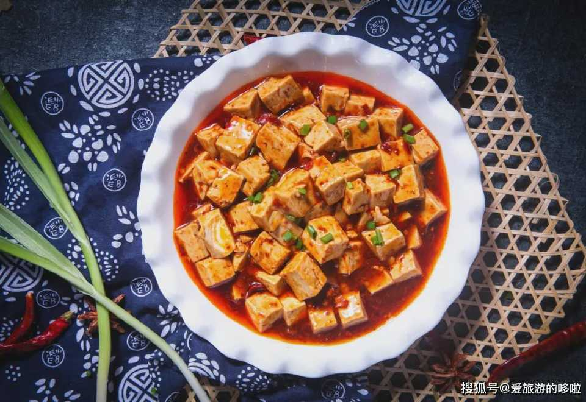

A fiery and aromatic dish from Sichuan province, Ma Po Tofu combines soft tofu with minced pork or beef in a rich, spicy chili bean sauce. The addition of Sichuan peppercorns gives it a distinctive numbing heat, perfectly balanced by the silky tofu texture and savory umami flavors.
This plant-based version of Ma Po Tofu replaces the traditional minced meat with finely chopped shiitake mushrooms. The result is a deep, earthy flavor that blends beautifully with the bold chili and fermented bean paste sauce, offering all the richness of the original with a vegetarian twist.
